1概览
我们的父亲——巫妖王（Lich King），把王国里所有人都变成了骷髅，好让自己能歇一歇。没了家长看管，你和一群调皮的兄弟姐妹正把王国重新变回生机勃勃的样子。
在 Bad Baby Lich Lords（熊孩子巫妖领主） 中，玩家轮流从某个骨堆（Bonepile）抓取骷髅，翻面并亮出在自己某个领域（Realm）的一侧。骷髅翻面后变成随从（Minion）。随从可不服管了！它们四处移动、互相打斗、施放法术，还会把别的骷髅唤醒，闹出各种出人意料的状况！
你的目标是凑齐正确的卡牌组合，在某个领域得分并占领它，同时阻止对手得逞。每次有人计分，巫妖王就会在睡梦中翻个身，把该领域里所有卡牌清空。率先累计 5 点噪音（Noise）、吵醒巫妖王的玩家获胜。
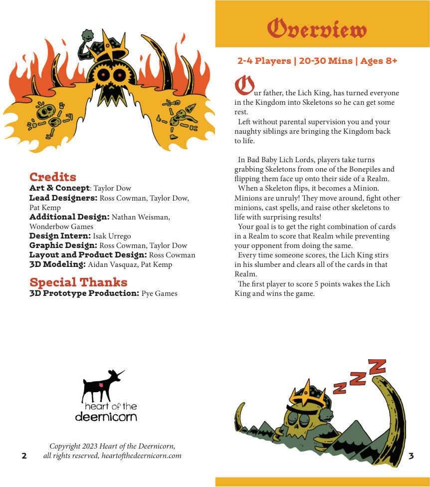
2组件
共有 4 个不同领域：扎德学院（Zard College）、自由民废料场（Freeple Scrapyard）、诺布林森林（Noblin Forest）和食尸鬼大墓城（Ghoulie Necropolis）。
双面牌，正面是随从，背面是骷髅，并印有一组技能图标，标明把它唤醒后随从会做什么。
用来放置领域牌，以及被称为骨堆（Bonepile）的随从/骷髅牌牌库。
每张都有一个噪音值（Noise Value）和计分条件（Scoring Requirements）。
即法术牌。宝宝勿动！（详见施放法术。）
插在领域托盘中的随从/骷髅牌牌库（即骨堆 Bonepile）。
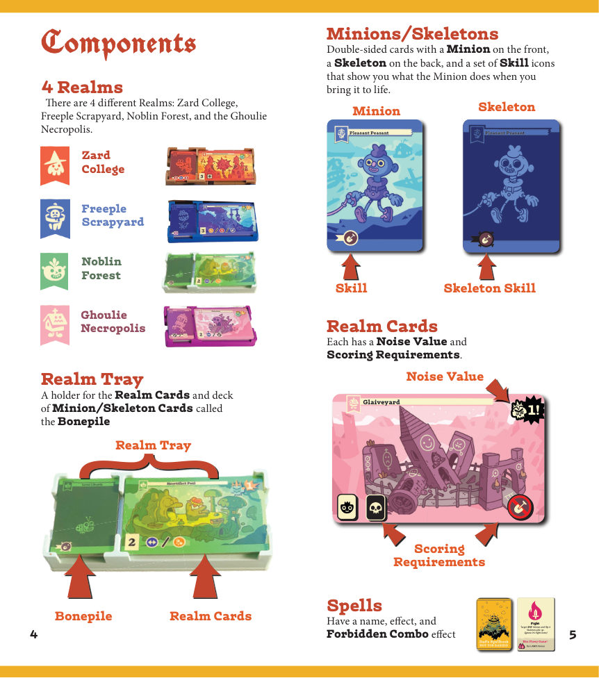
3准备（双人）
- 摆放领域托盘。任选 3 个领域托盘排成一列，置于两名对向玩家之间（见图）。玩家与领域托盘之间留出放牌的空间。第 4 个领域放在一旁——本局不使用。
- 洗混领域。将每个领域的骨堆和领域牌分别洗混。骨堆牌骷髅面朝上；领域牌正面朝上。
- 洗混法术。洗混法术牌（老爸的法术书），牌面朝下放在双方都能拿到的地方。
- 决定先手。选择或随机决定谁先手。
完成上述步骤后，即可开始游戏！
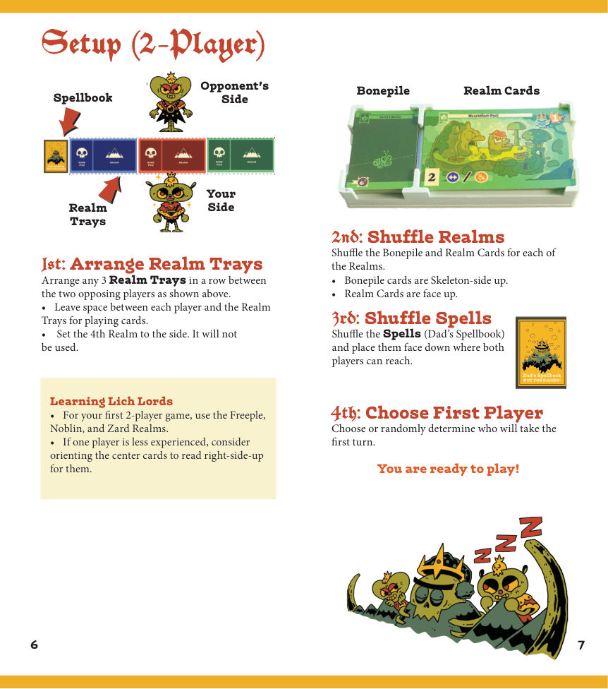
4游戏流程
王国（The Kingdom）
你面前的一片区域是你的一侧（Side）王国；对面则是对手的一侧（Side）。放在领域托盘任意一侧的卡牌，都视为处于该领域之中。
巫妖行动（Lich Actions）
你的回合选择一项巫妖行动：
- 抓取并唤醒（Grab & Raise）——从任意骨堆顶端取一张骷髅，移到你任意某个领域的一侧并翻面。
- 原地唤醒（Raise in Place, R.I.P.）——将你王国一侧任意一只已有的骷髅翻面，它仍留在同一领域。
回合流程（Turn Summary）
- 选择一项巫妖行动：抓取并唤醒，或 原地唤醒。
- 结算所有 随从行动（Minion Actions）。
- 若手中有法术，可在回合内任何其他行动之前或之后施放。
- 全部完成后，进行领域计分并结束回合。
随从行动（Minion Actions）
每当你将一只骷髅翻面，它变成随从并开始行动（Act），按从左到右的顺序执行其全部技能。
- 随从必须尽可能执行每一项技能。
- 每张牌每回合只能行动一次。
- 若你导致对手一侧的某张牌行动，在该牌行动期间由你操控。
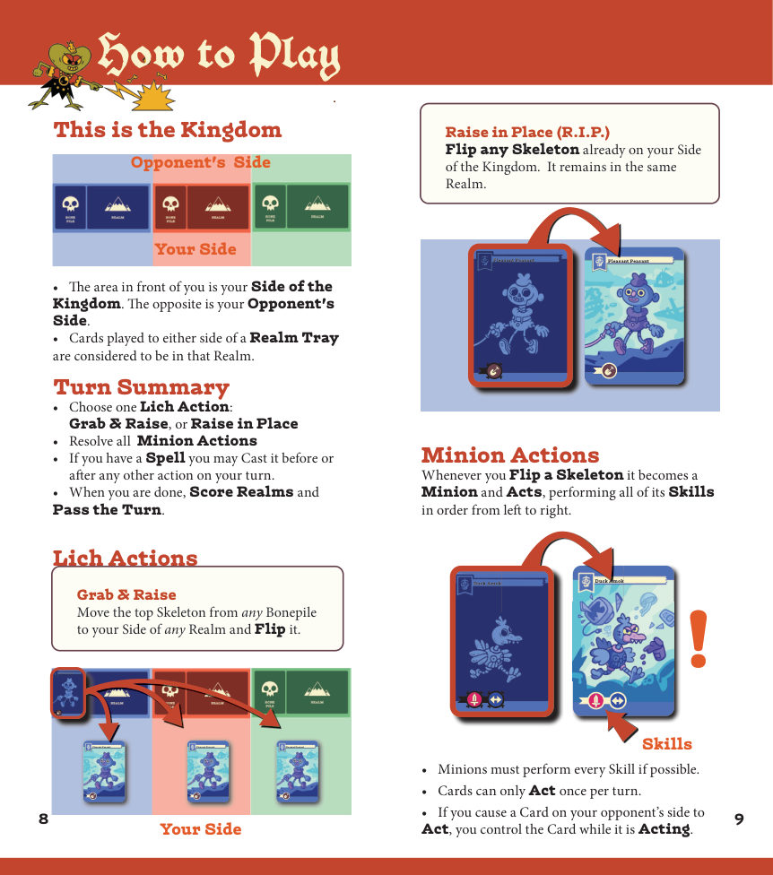
5施放法术
要施放法术（Cast a Spell），亮出你手中的一张法术，执行牌面描述的效果，然后将其焚烧（Burn）（放入焚烧堆 Burn Pile）。
部分随从技能会要求你抽一张法术。只要手中有法术，你就能在回合内施放。
- 回合内你可不限次数施放法术。
- 法术可在唤醒骷髅之前或之后打出。
- 随从行动期间不得施放法术。
法术用完时，把焚烧堆里的法术洗回，组成新牌库即可。
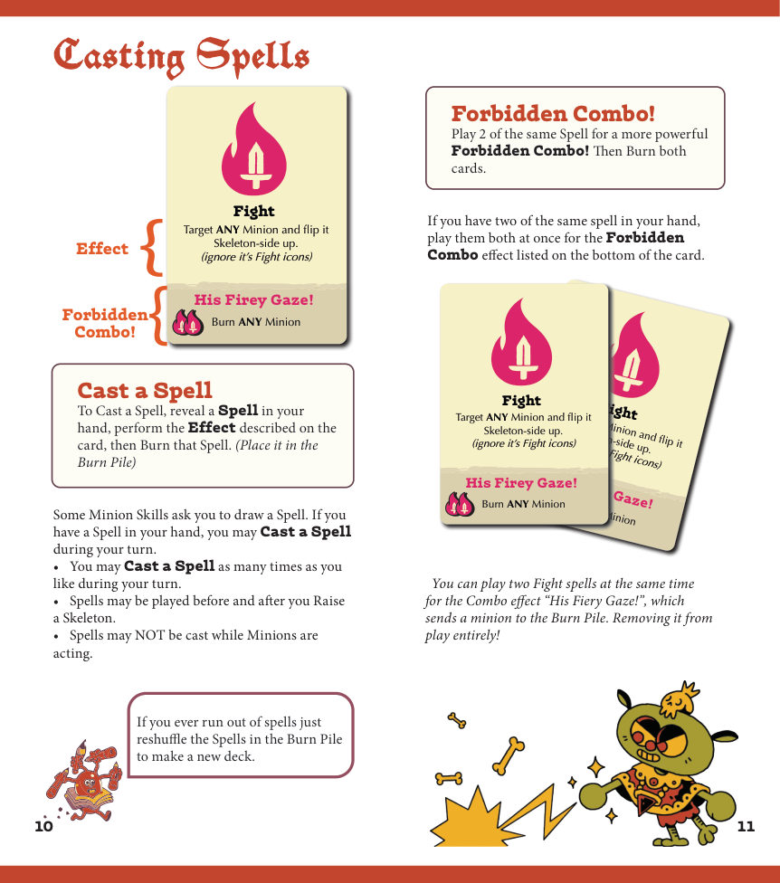
6领域计分
完成巫妖行动、结算完所有随从行动、施放完法术后，检查是否有领域被占领计分。
若某玩家在其领域一侧拥有一组满足计分条件（Scoring Requirements）的卡牌，该领域即被占领（Scored）。
谁计分？
- 你领域一侧的所有卡牌都计入该领域计分。
- 若对手一侧满足条件，则由对手占领该领域。
- 若多名玩家同时满足同一领域的计分条件，由当前回合的玩家占领。
- 领域仅在你的回合结束时计分。
- 一旦满足条件，必须计分。
当你占领一个领域
- 拿走领域牌（Take the Realm Card）。露出牌库中的下一张领域牌。
- 巫妖王苏醒了！（The Lich King Stirs！）将领域内所有卡牌（含对手的）收走并弃入焚烧堆。
你拿走的领域牌组成你的计分堆（Score Pile）。率先累计 5 点噪音（Noise）者获胜！
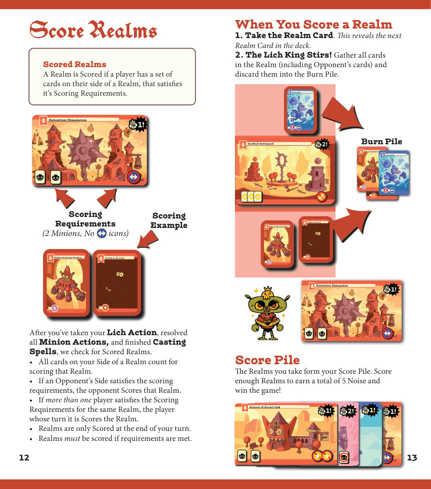
7技能
本节说明所有随从技能。你也可以在规则书封底找到速查表。所有技能都必须尽可能执行。
将本领域的骨堆顶端骷髅移到本领域的任意一侧。"本领域"指行动随从所在的同一领域。
在本领域中，将一只战斗技能较少的随从翻面（翻成骷髅面）。拥有多个战斗技能的随从，每个技能各触发一次。
将此随从移到相邻领域，不改变所属一侧。
将本领域任意一侧的一只骷髅翻为随从面。该随从行动，执行其全部技能。唤醒不可指定骨堆上的骷髅。
从法术书中抽一张法术。
选择本领域任意一只随从，令其行动。不可指定本回合已行动过的随从。
此随从行动时，仅选择其一项技能执行。两项技能仍都计入领域计分。
抽一张法术并立即打出。
将另一领域的一只随从移到本领域，不改变所属一侧。
选择本领域或骨堆中的一只骷髅，使其立即行动，如同随从一样执行其全部技能。
骷髅行动（Skeleton Actions）
通常骷髅从不行动。附身是例外！需注意以下几点：
- 骨堆上的骷髅离开时，移到相邻的骨堆。
- 骨堆上的骷髅挖掘时，以自身为目标。
- 由于唤醒（Raise）只能指定其他牌，骷髅无法唤醒自己。
- 每张牌每回合不能行动超过一次；若一只骷髅先行动，之后本回合被翻面，则不会再进行一次随从行动。
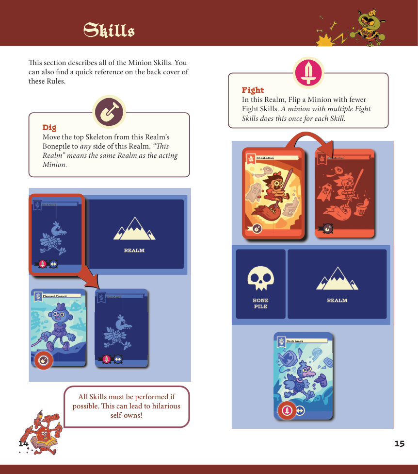
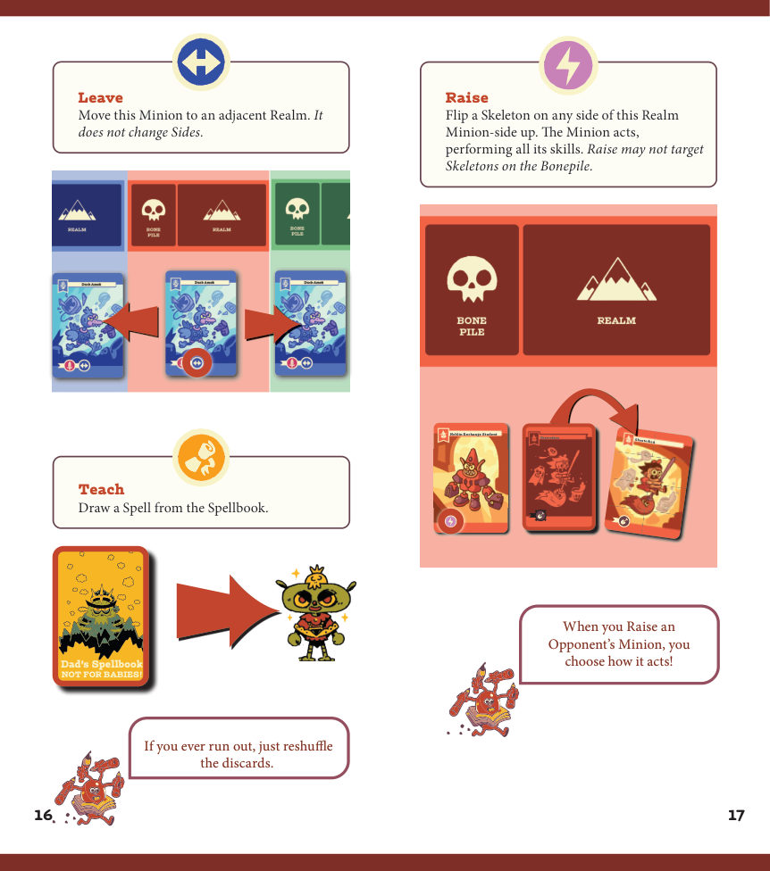
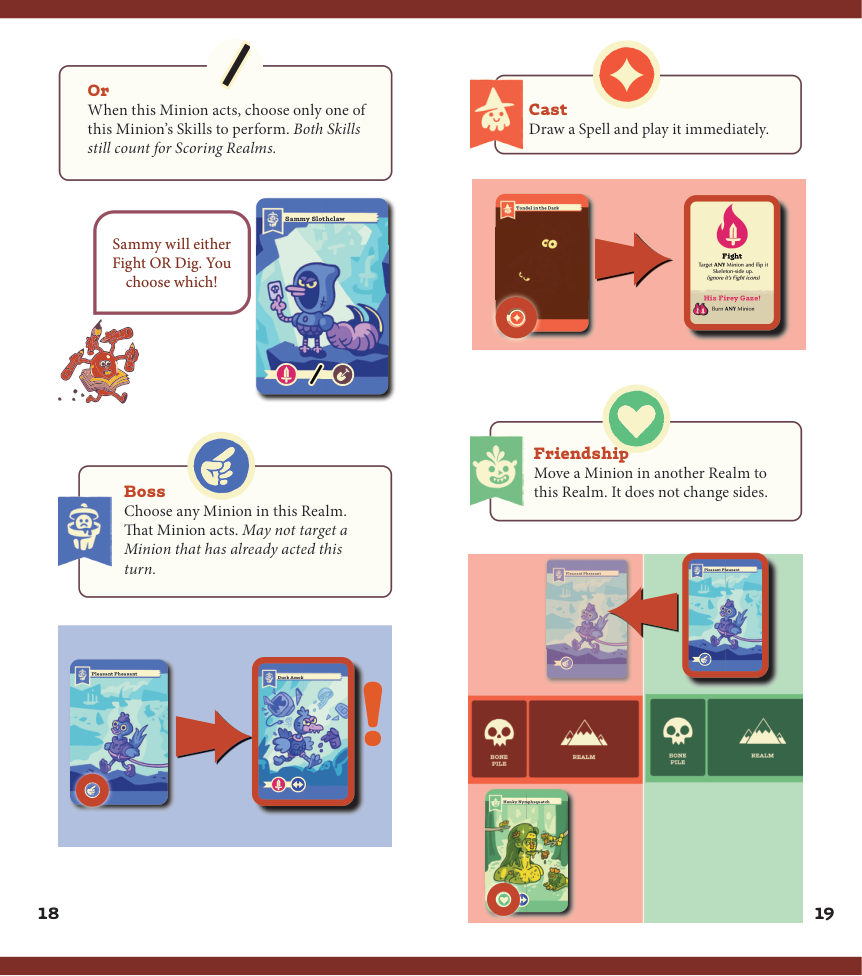
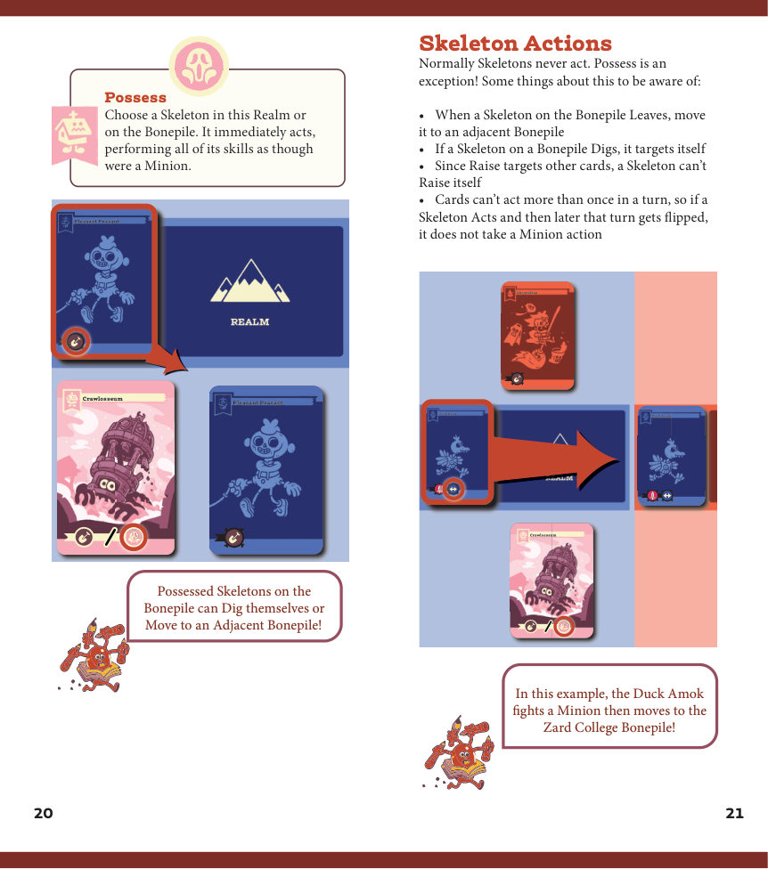
8计分条件
所有条件必须同时满足才能占领领域。领域牌上标明其噪音值与所需卡牌组合。
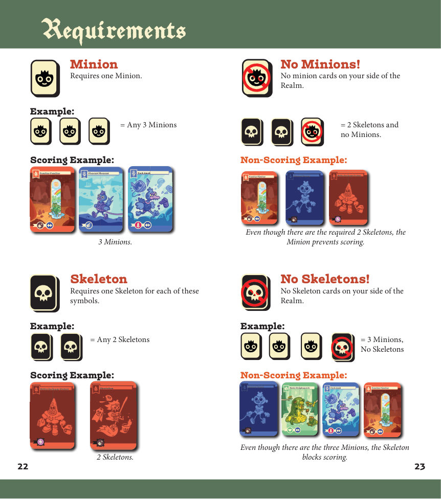
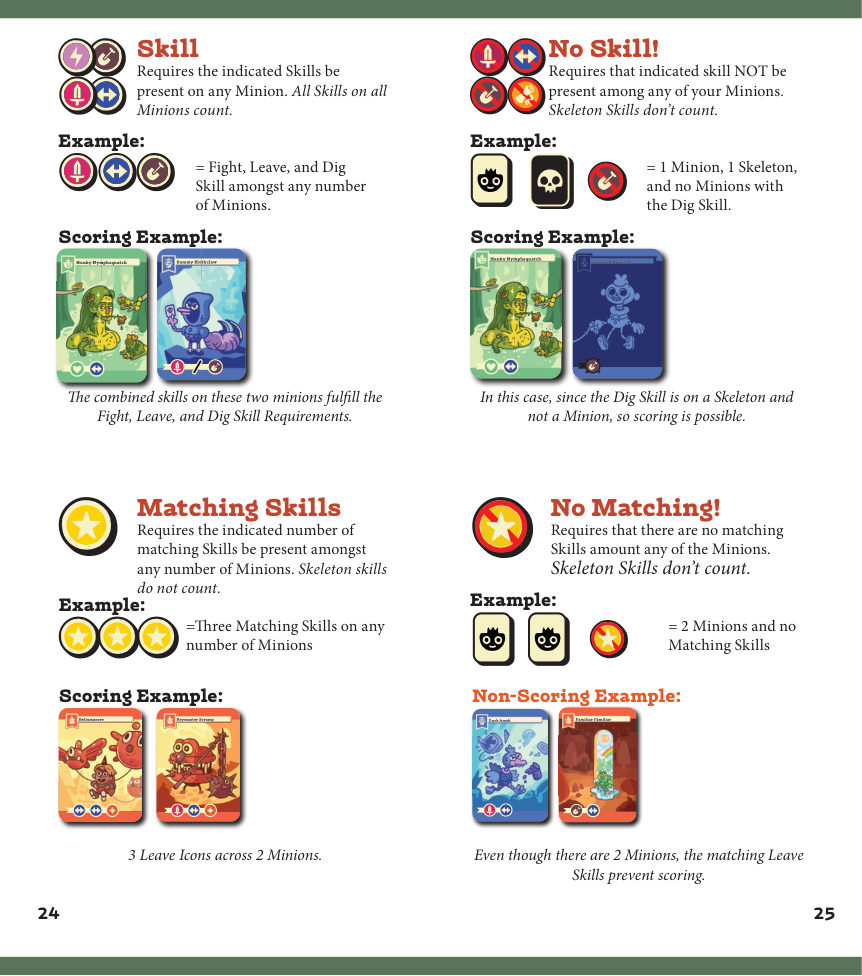
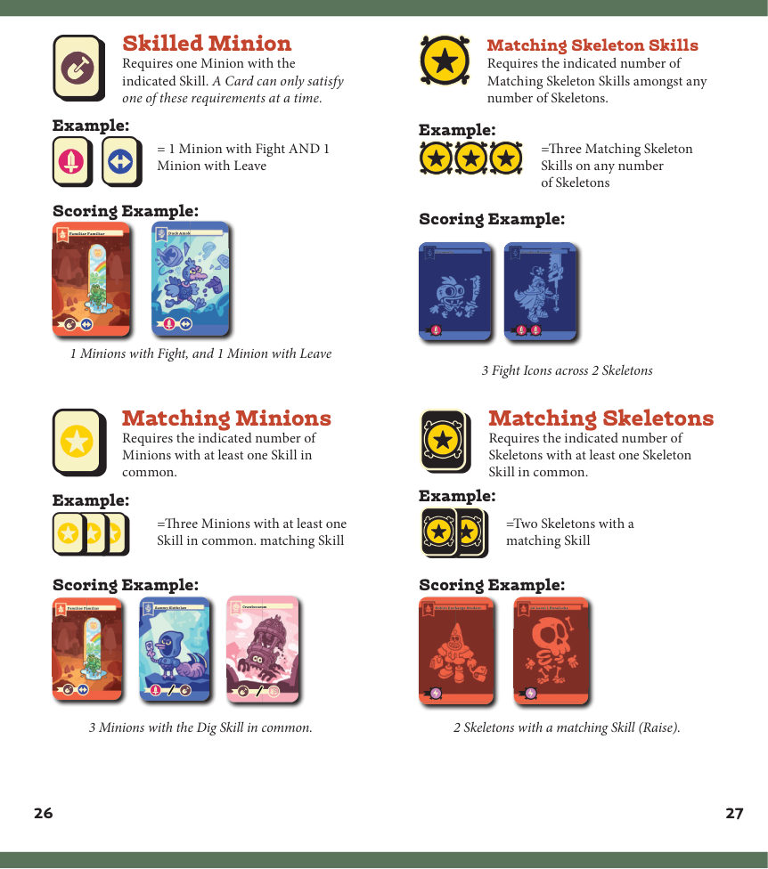
93–4 人规则
3 人——自由混战（Free-For-All）
- 使用全部 4 个领域。
- 中央领域有 3 侧，由三名玩家共用。
- 每名玩家的一侧还包含其左右两侧的领域。
- 法术可影响王国中任意位置。
- 随从不可在由不同玩家控制的领域间移动。
- 率先累计 5 分者获胜。
4 人——2 对 2 组队战（Team Battle）
- 使用全部 4 个领域。
- 与队友坐在桌子同一侧。
- 从右上角玩家开始，顺时针轮流。
- 每名玩家的一侧由 2 个领域（而非 3 个）组成。
- 随从可在队友控制的领域间移动。
- 法术可影响王国中任意位置。
- 队友可互相展示手中的法术。
- 率先由队伍合计累计 5 分者获胜。
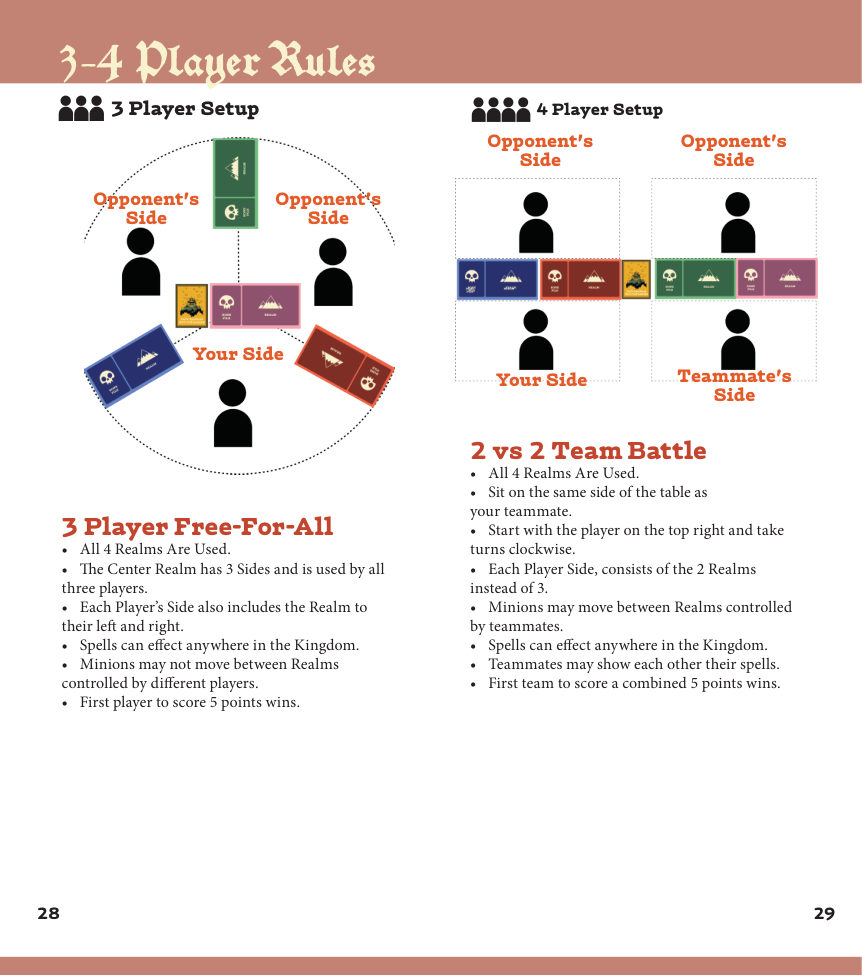
10快速查阅
技能速查（Skills Reference）
- 挖（Dig）：将本领域的骨堆顶端骷髅移到本领域的任意一侧。
- 战斗（Fight）：将本领域中一只战斗技能较少的随从翻面（翻成骷髅面）。拥有多个战斗技能图标的随从，每个图标各触发一次。
- 头目（Boss）：激活本领域中任意另一只随从。不可指定本回合已行动过的随从。
- 施法（Cast）：抽一张法术并立即施放。
- 附身（Possess）：激活本领域或骨堆中的一只骷髅，使其如同随从一样执行骷髅技能。
- 友谊（Friendship）：将另一领域的一只随从移到本领域，不改变所属一侧。
- 教导（Teach）：从法术书中抽一张法术。
- 离开（Leave）：将此随从移到相邻领域，不改变所属一侧。
- 唤醒（Raise）：将本领域任意一侧的一只骷髅翻面，其执行一次随从行动。不可指定骨堆上的骷髅。
计分速查（Scoring Reference）
- 骷髅（Skeleton）：一张骷髅牌。
- 随从（Minion）：一张随从牌。
- 计分条件（Requirements）：所有条件必须同时满足才能计分。
- 技能（Skill）：要求任意随从上出现指定技能。所有随从的全部技能都计入。
- 特定技能随从（Skilled Minion）：要求一名带有指定技能的随从。一张牌同一时间只能满足其中一项条件。
- 相同技能骷髅（Matching Skeletons）：要求指定数量的骷髅至少共享一项骷髅技能。
- 相同骷髅技能（Matching Skeleton Skills）：要求任意数量骷髅中指定数量的相同骷髅技能。
- 相同技能（Matching Skills）：要求任意数量随从中存在指定数量的相同技能。骷髅技能不计入。
- 相同技能随从（Matching Minions）：要求指定数量的随从至少共享一项技能。
- 无随从！（No Minions！）：你领域一侧不能有随从牌。
- 无骷髅！（No Skeletons！）：你领域一侧不能有骷髅牌。
- 无此技能！（No Skill！）：要求指定技能不在你的任何随从身上出现。骷髅技能不计入。
- 无相同技能！（No Matching Skills！）：要求所有随从中没有任何相同技能。
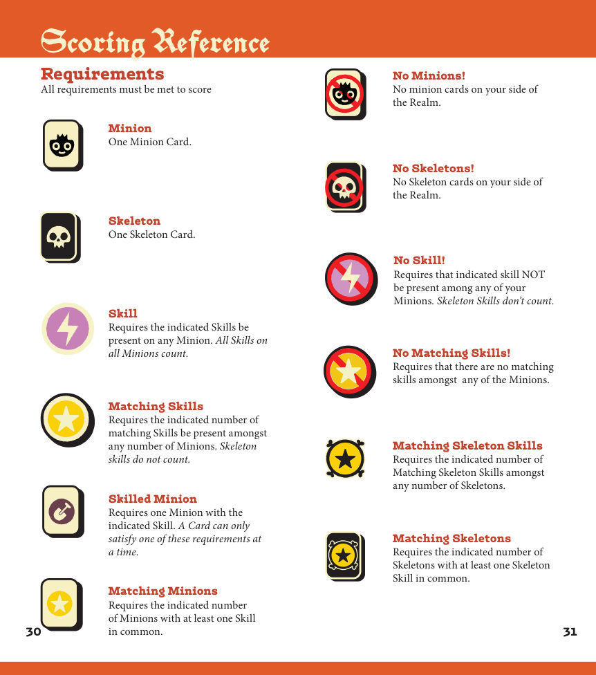
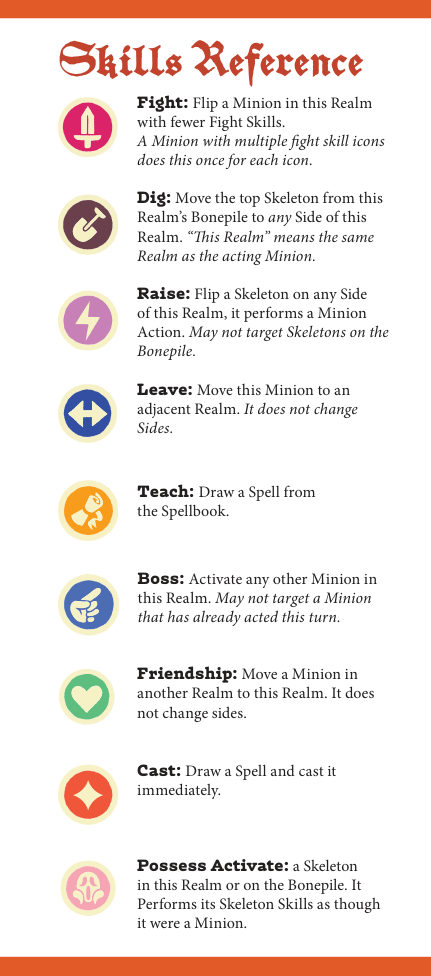
制作人员
美术与概念（Art & Concept）：Taylor Dow
主设计（Lead Designers）：Ross Cowman, Taylor Dow, Pat Kemp
额外设计（Additional Design）：Nathan Weisman, Wonderbow Games
设计实习（Design Intern）：Isak Urrego
平面设计（Graphic Design）：Ross Cowman, Taylor Dow
排版与产品设计（Layout and Product Design）：Ross Cowman
3D 建模（3D Modeling）：Aidan Vasquaz, Pat Kemp
特别鸣谢（Special Thanks）：3D 原型制作 — Pye Games
版权（Copyright）：2023 Heart of the Deernicorn，保留所有权利 — heartofthedeernicorn.com